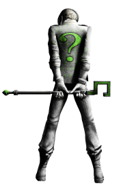
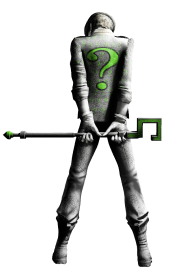

Le Sphinx
Saphir
Le Joker
Infirmière
Psychiatre
Dentiste
Une pièce
Un livre
Un couteau
Stanley Kubrick
Andy Warhol
Peter Jackson
Turquie
Islande
Allemagne
Le Pingouin
Ra’s al Ghul
Poison Ivy
Gotham City
Starling City
Hell’s Kitchen
Georges Clooney
Val Kilmer
Mickael Keaton
L’Homme Mystère
L’Épouvantail
Hugo Strange
Emma Watson
Gigi Hadid
Lola Iolani Momoa
Zoë Kravitz
Thomas et Martha
Elaine et Georges
Martha et James
Heath Legder
Haeth Ledger
Heath Ledger
1940
1939
1941
Oracle
Huntress
Black Canary


 
